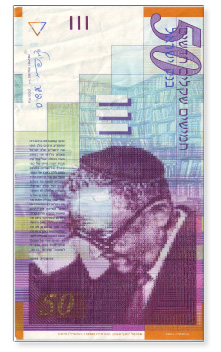

THE HIDDEN GOOD IN ISRAELI BANK NOTES Here’s a question for the Israel
During these days of Bein HaMeitzarim, at all the special shiurim about the Beis HaMikdash that I attended, after a description of the avoda of the Kohanim which was accompanied by the singing of the Levites I took out a fifty shekel bill and read what it says on it. It’s Agnon’s Chassidishe dream…

Here’s a question for the Israelis among us: How many times in your life did you handle a fifty shekel bill, whether in the grocery store, on the bus, or as a donation to the needy, without reading the small words next to the picture of Shai Agnon (Shmuel Yosef Agnon 1888-1970, awarded the Nobel Prize for Literature) in a large yarmulka?
The truth is that I myself was surprised when I heard that an excerpt from his writings about the singing of the Levites in the Beis HaMikdash appears there.
During these days of Bein HaMeitzarim, at all the special shiurim about the Beis HaMikdash that I attended, after a description of the avoda of the Kohanim which was accompanied by the singing of the Levites I took out a fifty shekel bill and read what it says on it. It’s Agnon’s Chassidishe dream:
In a vision I saw myself standing with my fellow Levites in the Beis HaMikdash as I sang with them songs of David, King of Israel. Tunes such as these were never heard since the day our city was destroyed and they went into exile. I suspect that the angels appointed over the heavenly Chamber of Song, in their fear that I will sing upon awakening that which I sang in my dream, make me forget by day what I sang at night; for if my brothers, my people, heard it they would not be able to withstand their sorrow over the good that was lost to them.
I will also quote a few words from the two hundred shekel bill which also fit into the shiurim about anticipating the Geula. On this note there is a quote from former Israeli President Shazar. He explains that the wording “anticipating the Geula” refers to the job of someone like a lookout that stands on the top of the wall and watches to see if and when the danger approaches, or in our case, the Geula. At the end of the quote is a compliment to the Chabad yeshiva in Tzfas and the Chassidim of Tzfas:
Those who preceded us established signs whereby the complete Jew can be tested for his faithfulness. Present him with the fundamental question: Did you anticipate the Geula? In other words, not merely did you want or hope for it or believe in it. That is not sufficient. Rather, did you stand on the wall and concentrate your senses and look for it expectantly as one would do in a time of danger … The lookouts of Tzfas have placed themselves on this high watch tower and watch expectantly.
REVEALING THE GOOD IN EVERY JEW
In a sicha for Shabbos Nachamu, the Rebbe explains that the ten Shabbasos, the 3 of Puranus (retribution) and 7 D’Nechemta (of consolation), correspond to the 3 Mochin (chochma, bina, daas) and 7 Middos (chessed, g’vura, tiferes, netzach, hod, yesod, malchus).
In other words, the calamity and the consolation are not two opposing forces but are intended to complement each other. The difference is that Puranus is the hidden good (as in Mochin-intellect, where emotions are not displayed), while consolation is when the hidden good emerges.
In the work of shlichus too, as well as regarding the chinuch of children, a Chassid needs to see the good which is hidden within every Jew. When a Chassid successfully reveals the good in someone else, he can maximize it, uplifting him or her, be mekarev that person and have the good overcome the bad. Sometimes, we look at someone as he appears superficially or based on a few negative words that he said. But the Baal Shem Tov taught us (see HaYom Yom, 2 Elul) that every Jew contains treasures of Yiras Shamayim and good middos and we just need to reveal them.
WITH THE HELP OF A CIRCUMCISION AND A PILE OF S’FARIM
This is the story of Eliezer (formerly Leonid) Bogolovsky, one of the linchpins of the Beis Moshiach center in Be’er Sheva, as told by R’ Avraham Cohen, shliach and director of Beis Moshiach:
A number of years ago, there was a Russian woman who came to our center and listened closely to every D’var Torah and t’filla. Considering her thirst for Judaism, I felt this must be a lofty neshama. This was demonstrated in the way she performed every mitzva that she learned about and her strong influence on her entire family. Eventually, her husband also began coming to shiurim and to t’fillos. Then the son Leonid came.
Leonid did not seem overly interested in the material that was taught, but he was polite and wanted to please his mother. This is why he kept coming back for davening and shiurim. However, he was simply unwilling to put on t’fillin. As he put it, “I am not opposed to t’fillin, but I don’t see the point. I feel that it’s out of the question for me to put on t’fillin.”
R’ Meir Krichevsky, the “shliach Torah” who also knows Russian, learned with Leonid regularly. The two of them often learned together, but Meir too was unable to convince Leonid to put on t’fillin. We also found out that Leonid did not have a bris. Meir tried to talk about this important mitzva but got nowhere. Said Leonid, “I am not opposed but I don’t see the point.”
R’ Krichevsky said to me, “You are the Rebbe’s shliach. Maybe you, with the Rebbe’s ko’ach, can convince Leonid to have a bris.”
I sat and thought about what I could do that Meir hadn’t done yet. I put a few coins in the pushka and said a few chapters of T’hillim with intense concentration, and I asked Hashem to put the right words into my mouth.
I suddenly remembered an idea that I had heard from R’ Meir Varzov a”h who worked a lot with Russian Jews. He said, “A Russian Jew respects an educated person. Show him scholarship, demonstrate knowledge, and this will win him over.” So I prepared a pile of about fifteen s’farim which explain the importance of a bris and put bookmarks in each book at the spot where it spoke about the subject. I brought a Chumash, Mishna, Gemara, Zohar, Seifer HaChinuch, and many other s’farim that address this mitzva.
I arranged a meeting with Leonid and he came. I opened book after book and read the divrei Torah and Chazal about the importance of mila. After going through all the s’farim, Leonid said just two words: “When? Where?”
We arranged for a mohel and within a week, Leonid was circumcised and was given the name Eliezer.
***
From then on, Eliezer was like a different person. The treasures of his neshama were revealed. He became very involved with the Chabad house. You know the expression people use: “He’s his right hand man?” Well, Leonid became the right hand and the left hand, the right foot and the left foot in all the work of the Chabad house.
In addition to his job as a manager in a hi-tech firm, he goes to the mikva every morning before davening, he takes care of the yard and the garden of Beis Moshiach, he’s the photographer at all events, he distributes brochures, he arranges shiurim, and he takes care of the technical equipment for gatherings. He produced a promotional album for fundraising in Eretz Yisroel and abroad and another album with all of the community’s celebrations. He is also in charge of the library and the geniza.
And it all started when he showed up just to do his mother a favor!
That’s the way it is when you reveal the good that is hidden within a Jew.
CHANGE OF HEART FOR A HOLOCAUST SURVIVOR
Here is another story from R’ Avraham Cohen:
Many years ago, there was a successful contractor who built neighborhoods throughout the country. Every so often I would go and visit him. I would give him matza, a lulav, a calendar, etc. Sadly, he reacted less than appreciatively. Not only did he not want to say the bracha on the lulav, he always had something negative to say about Torah and mitzvos. Between the lines I understood that he was very angry at G-d because of the Holocaust, but he never said so explicitly.
One day, I tried to crack the klipa of his opposition and said, “Why don’t you put on t’fillin? Give G-d some nachas.”
He raised his voice and said, “Nachas?! You want me to give Him nachas? Just tell me how I can hurt Him and I’ll do so immediately.”
He went on to tell me how his entire extended family had been killed in the Holocaust and he asked me not to talk to him again about doing mitzvos.
I accepted his request but kept in touch with him because one can’t give up on a Jew. I would say, “Shalom, how are you?” “Chag Sameiach.” “Shabbat Shalom.” But nothing about doing mitzvos. He would occasionally make nice donations to the Chabad house, but there was never a word about mitzvos.
Time passed and one day I stopped in to say hello. For some reason, I decided to try again and I said, “Maybe you will agree to put t’fillin on one day …” He got up with a smile on his face, rolled up his sleeve and showed me the marks of t’fillin straps on his arm.
I was astounded by this transformation in him and I asked him what happened. He asked me to sit down because he wanted to share with me what he had been going through for the past while.
“Although I am still very angry at G-d because of the Holocaust, I accept that He is in charge of the world. In other words, I cannot accept what you say in the davening that G-d is merciful and gracious, but after what I’ve been through lately, I say again – He is in charge of the world.
“I recently ran into difficulties, strangely enough, in every area of my life. My business was sustaining major losses, my marriage was on the rocks, and even my relationship with my children was messed up. I felt closed in by problems as though – or not “as though” – there was a guiding hand that was persecuting me.
“One day, in despair, I went to a bar and began drinking in order to forget my problems. The door suddenly opened and an old friend of mine came in. It seems he already knew my situation and that I was in the bar and he came especially to rescue me. ‘We are old friends,’ he said, ‘and I did not come here to argue with you. I just ask you to come with me now to where I am going to take you.’
“I didn’t have many options and so I got into his car and drove with him to the Chabad rabbi in Rechovos. The rabbi spoke to me. He explained that our relationship with G-d goes both ways. ‘If you follow in My statutes … I will give your rains in the proper time.’ He suggested that I try it, and see the results for myself.
“I began putting on t’fillin – as you just saw the marks on my arm – and things began to straighten out including my marriage, parnasa, and my children. I am still angry at our Father in Heaven, but I feel like a child who was away from home a long time and finally returned.”
When I left the contractor’s house I thought: See – you can never give up on a Jew. Every Jew believes and you only need to draw it out.
Please daven for Yaakov Aryeh ben Rochel for a refua shleima
Rabbi Yaakov Shmuelevitz. "THE HIDDEN GOOD IN ISRAELI BANK NOTES Here’s a question for the Israel." Beis Moshiach, no. 844 (August 3, 2012).